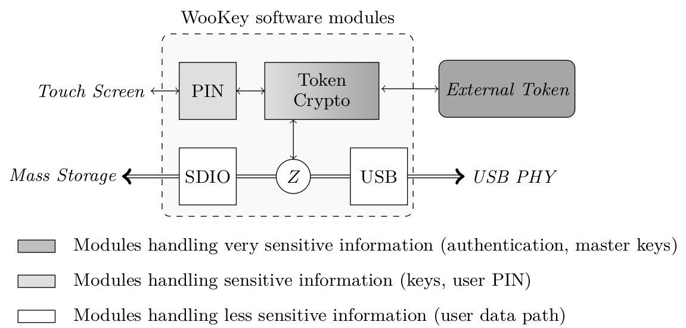
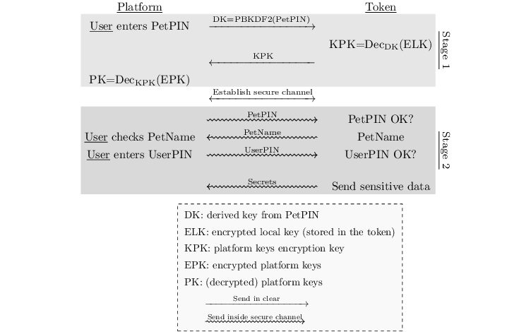
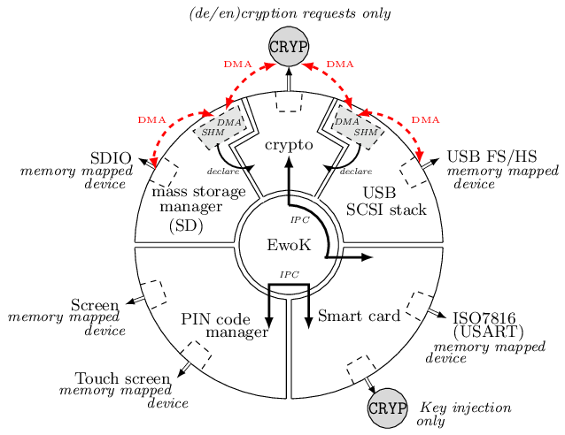
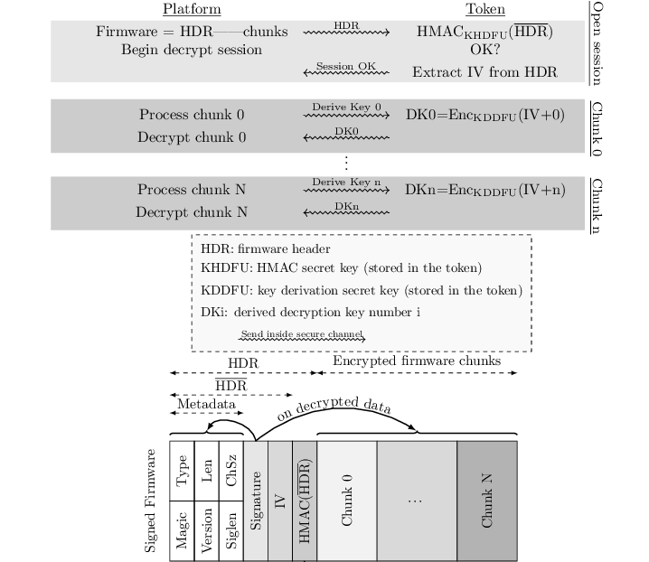
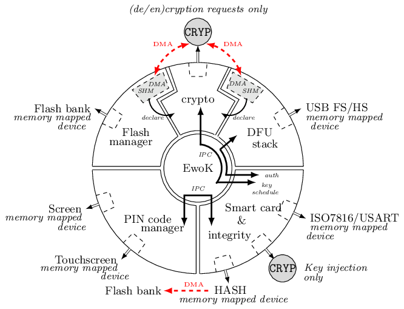
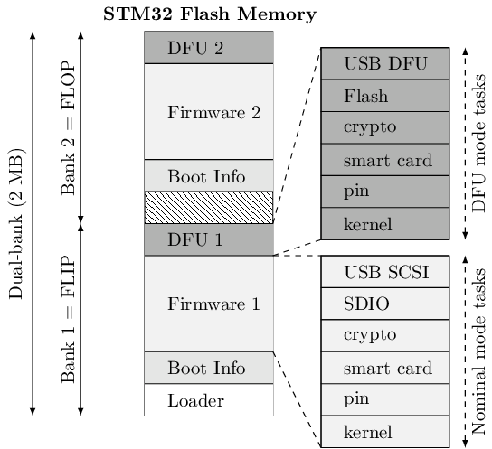

4. WooKey architecture¶
That section roughly describes the rational of the architecture/design choices implemented in the WooKey platform. More information about those security concerns are detailed in the section Publications.
Contents
4.1. Hardware design rationale¶
The functional and security inputs of the WooKey specifications lead to natural design choices and/or requirements when it comes to the hardware platform.
First, the processor at the heart of the design must embed a Memory Protection Unit (MPU), as well as a cryptographic acceleration to guarantee fast user data encryption.
In order to achieve good performance on the USB side, the controller must be compatible with the USB High Speed (USB 2.0) specification.
A strong user authentication mechanism must be provided through the usage of an external token, which securely embeds the sensitive master keys of the platform.
The firmware must remain authentic during the life-cycle of the product, and only updated through controlled means: debug functionalities provided by the SoC manufacturer such as Joint Test Action Group (JTAG) or Serial Wire Debug (SWD) interfaces must be reliably deactivated.
Since the platform design has been thought to be open source, all components and their data-sheets must be publicly available. The platform should have a good security versus price ratio in order to allow large-scale deployment. We detail in the next sections the rationale behind our specific choices for the hardware components.
On the MCU side, we focused on the STM32F439 as it fits most of our needs. Moreover, the Cortex-M4 SoCs have been widely studied in the recent years, and the STM32F439 features a cryptographic coprocessor (the CRYP engine) as well as a TRNG (True Random Number Generator). See https://www.st.com/en/microcontrollers/stm32f429-439.html?querycriteria=productId=LN1806.
Though this SoC has an integrated USB Full Speed PHY (12 Mb/s capable), it needs an external PHY to achieve High Speed (480 Mb/s). The communication between the SoC and the PHY is done using ULPI, which is a standardized interface for USB 2.0.
We have chosen to store the encrypted user data on external SD cards. This format has many advantages. It offers large storage capacities for an affordable cost with a possible expansion of the USB thumb drive capacity by switching the SD modules. Compared to raw flash modules, there is no need to handle complex FTL (Flash Translation Layer) software layers (the firmware embedded in the SD card takes care of this).
A strong user authentication ensures that no sensitive cryptographic operation is performed without the legitimate user presence (through a correct PIN code). This implies that all the cryptographic and authentication material must be handled securely: a secure element seems to be a suitable choice for this task. Splitting the platform and the user authentication material yields in a strong two-factor authentication scheme. This is why we have chosen to use an external and extractable user token (instead of soldering it) in the form of a smartcard. Since Javacard is the only widely available framework to offer a Common Criteria certification, we have chosen to focus on this platform. More specifically, we have developed and tested our applets on EAL 4 certified NXP JCOP J3D081 2.4.2 smartcard.
In order to limit the smartcard PIN code exposition and defeat Man In The Middle Attack on the USB bus or in a compromised host, we have decided to include a user input interface directly on the platform. This allows confining the PIN in the WooKey device. We have chosen the SPI based TFT-LCD ILI9341 with a AD7843 touch screen component, allowing a randomized PIN pad that makes movements observation attacks more complex.
4.2. Software design rationale¶
Classical USB thumb drives need at least two main software components: the USB stack to exchange data with the host and the mass storage manager to store data. One of WooKey main features is to encrypt the data at rest, which requires a dedicated cryptographic module to encrypt/decrypt this data for performance reasons. WooKey must securely manage both the cryptographic and authentication materials along the user data path.
The data path goes through three logical modules to read and write data from/into the device:
- The USB module handles the USB communication with the host.
- The SD module manages the mass storage device and read/write of encrypted data.
- The cryptographic module sits between these two modules. It encrypts/decrypts data when the authentication has been performed using the external token.
The CRYP hardware module increases the cryptographic operations performance: processing an AES block takes very few cycles, and the engine allows DMA (Direct Memory Access) transactions with the other modules (USB and SDIO).
Since we want the encryption and decryption along the data path to be very efficient during USB and SDIO transfers, we must avoid a reconfiguration of the AES CRYP engine (and a key schedule) at each transaction while preventing the USB and SDIO tasks to steal and leak the sensitive data encryption key. Fortunately, we can isolate the registers configuring and holding the AES key using the MPU. This yields in the following split of the WooKey cryptographic task in two modules:
- An untrusted cryptographic module: it shares memory space with the USB and SDIO tasks, and its job is to trigger AES CBC encryption and decryption in the CRYP and handle DMA transfers. This module uses the CRYP with the key already setup, and never accesses the secret value.
- A trusted cryptographic module: this module is confined and isolated from the other tasks. It is in charge of setting up the CRYP key registers with the secret AES key derived from the external authentication token. It is also in charge of managing all the communication with this token.
The trusted cryptographic module communicates with the external smartcard through the ISO-7816-3 layer, with APDUs. The main SoC and the token embed (personalized) Elliptic Curve Cryptography ECDSA key pairs. The first thing that is performed by the two peers when the token is inserted is a mutual authentication. This is performed with an ephemeral ECDH (Elliptic Curve Diffie-Hellman), and deriving AES-CTR and HMAC-SHA-256 session keys, as well as a random IV (Initialization Vector) value. This allows us to establish a secure channel with confidentiality, integrity and anti-replay properties. Forcing a mutual authentication as a mandatory first step allows to limit the attack surface (with malicious tokens or a malicious ISO-7816 master).
4.3. Cryptography¶
Cryptography is involved in two main topics on the Wookey platform: the user data confidentiality, and the external token interactions.
4.3.1. User data confidentiality¶
Full-Disk Encryption (FDE) has become a matter of concern and a topic of interest in applied cryptography these last years. The high level features an end user expects are both data confidentiality and integrity. Unfortunately, no ideal efficient solution exists nowadays since integrity expects extra data to be stored on the disk. This explains why most of FDE solutions choose to only focus on user data confidentiality, and this is also the case for Wookey.
We have decided to use AES-CBC-ESSIV (used, amongst others, in Android FDE) because of performance reasons: the CBC mode is accelerated by the CRYP coprocessor of the STM32F439. Although tweakable modes such as AES-XTS are more popular and more resistant against block malleability, we stress out that integrity is still at risk. With Wookey, we clearly state that integrity is not ensured when a device or an SD card is lost: a straightforward solution for the end user is to handle it in a higher layer (e.g. file system).
Note
Actually, we also support TDES-CBC-ESSIV (i.e. using TDES as the core algorithm to encrypt user data). Although TDES is clearly less modern than AES (TDES has an effective 112 bits security compared to 256 bits for AES), it has one advantage over AES in the WooKey project: the CRYP coprocessor in DES mode can ‘forget’ the master secret key after key injection and key schedule (which is not the case for AES because of an asymmetrical implementation in hardware of the encryption and decryption key schedules, imposing to reinject the key whenever the direction is switched). Hence, using TDES-CBC-ESSIV avoids cold boot attacks post-user authentication (i.e. master key injection): the master key does not leave in the SoC SRAM anymore, which can be an interesting feature depending on the attack context. This is why we leave to the user the choice of the algorithm.
Hint
TDES-CBC-ESSIV and AES-CBC-ESSIV can be configured in the menuconfig ‘Block device FDE (Full Disk Encryption) options’ submenu.
4.3.2. External tokens and user authentication¶
The smart card extractable tokens are a cornerstone of Wookey’s security. Since they are based on EAL certified chips, they are entrusted with the sensitive secrets, e.g. the user data at rest AES-CBC-ESSIV key and other assets.
Mutual authentication and secure channel:
The main purpose of the cryptographic architecture that we describe in this section is to protect the Wookey device from pre-authentication attacks. That is to say, an attacker having access to the device but with only one of the two authentication factors (the token or the user PIN) will not be able to recover sensitive assets.
The main platform and the external token are strongly bound thanks to a mutual authentication. The main SoC and the token embed personalized ECDSA authentication key pairs, yielding in an authenticated ephemeral ECDH (Elliptic Curve Diffie-Hellman) to derive AES-CTR, HMAC-SHA-256 session keys as well as a random IV (Initialization Vector) value. This establishes a session with a secure channel over the ISO7816 physical line with confidentiality, integrity and anti-replay properties.
Forcing a mandatory mutual authentication mitigates man-in-the-middle adversaries, and limits the attack surface against malicious tokens and malicious ISO7816 masters.
Rogue tokens, PetPIN, PetName and UserPIN:
When considering our threat model, an adversary could steal the user PIN. The scenario is the following: the attacker first steals both the platform and the token from the user while replacing them with ersatz in order to deceive the user. When the legitimate user enters the PIN and realizes that the device is fake, it is too late since the PIN might have been sent over-the-air. In order to thwart such attacks, we use a two steps authentication involving two PIN codes: the PetPIN and the UserPIN as presented in Stage 2 of Figure below. The PetPIN partially unlocks the token while providing it along with the UserPIN fully unlocks it (to get sensitive secrets). When providing the PetPIN, the token sends back the PetName: this is a secret sentence that has been provisioned during setup by the user. This PetName is printed on the device screen allowing the user to check it and decide knowingly to enter his UserPIN, thus impeding rogue tokens scenarios.
STM32 assets protection:
Although sensitive assets are safe inside the smart card secure element, this is less the case in the STM32F439 SoC internal flash. As discussed in section, hardware flash readout protections are not bulletproof against adversaries performing fault attacks. This means that the platform ECDSA keys are at risk when the device is lost. In order to protect such keys, we encrypt them using a key derived from the PetPIN as represented in Stage 1 of Fig. below. A straightforward – yet unsafe – way of doing this is to use a standard Key Derivation Function such as PBKDF2. This is risky since the STM32F439 has not enough power to support the number of iterations recommended against brute force attacks, knowing that users usually encode their PINs on few digits. We deal with offline exhaustive search by making the external token derive the ECDSA assets decryption key from the PetPIN PBKDF2 derived value: the adversary will need the slow and secure external hardware that severely restricts brute force attacks.
AUTH, DFU and SIG tokens:
For the sake of security, we have decided to dedicate a different token for the three main phases of the product. The AUTH token is used during the nominal mode and stores the data at rest AES-CBC-ESSIV master key. The DFU token is committed to the DFU mode and is in charge of managing the firmware decryption sessions keys (more on this in the dedicated section). Finally, the SIG token is not directly used with the device per se: it is specifically devoted to protect the ECDSA firmware signature private key, derive encryption keys, and is used on the firmware production platform (e.g. a PC).
{kind=link}
The three tokens use the two stages user authentication and secure channel mounting protocol presented on Fig. above with dedicated ECDSA keys, PetPIN, PetName and UserPIN for each of them.
4.3.2.1. Wookey nominal mode¶
This mode of operation is composed of five isolated user mode tasks, each one handling one peripheral of the platform as presented on Fig. below.
4.3.2.2. Wookey DFU mode¶
Since firmware updates are usually the Achilles heel of embedded devices security, we have put some efforts to have a flexible, robust and secure upgrade process through a dedicated DFU mode of Wookey.
Flexibility comes from the usage of the Device Firmware Update protocol as standardized by the USB consortium. This allows us to be compatible with existing classic tools.
4.3.3. User data path¶
The USB module handles the USB stack to communicate with the host through SCSI commands. The SD software module manages the mass storage device on the SDIO bus. The crypto module sits between these two modules, and drives the CRYP coprocessor. These three modules are dedicated to the data path: user data is transparently (de)encrypted along this path once the user is authenticated. In order to optimize the data flow, two shared DMA buffers are declared by the USB and the SD tasks, through dedicated syscalls, to be used by the crypto task as sources or targets for DMA transfers. Hence, the crypto task is able to program DMA transactions between the USB and the SD module via the CRYP device, allowing transparent data packets (de)encipherment.
Authentication path
Interestingly, although the crypto task manages the data path, it has never access to the storage master key: it only uses the CRYP device as a (de)encryption engine. More generally, all the platform sensitive secrets follow an authentication path that is completely separated from the mass storage data path. This ensures a defense in depth property for Wookey: compromising any of the exposed USB, SD or crypto tasks will not lead to critical assets leakage.
Two other software modules, the smart card and the PIN components, are devoted to the authentication path. The PIN task interacts with the touchscreen: it sends the PetPIN/UserPIN to (and gets the PetName from) the smart card task using IPCs. The smart card module handles the AUTH token, dealing with the ISO7816 layer and the secure channel, and gets the AES-CBC-ESSIV master key after a successful user authentication. This key is injected in the CRYP dedicated memory mapped area (only accessible to this task), allowing the crypto task to drive ciphering operations without knowing it.
{kind=link}
4.3.4. Firmware signature and encryption¶
In order to ensure the firmware authenticity, we apply an ECDSA signature with a private key enclosed in the SIG token on a trusted dedicated host. A straightforward way of implementing the signature verification is to embed the ECDSA public key in the Wookey platform and check the signature after a firmware is written in flash (writing the firmware before checking it is unavoidable because of a very limited embedded RAM size). The flag in the boot information sector is flipped to a proper value if and only if this check is consistent. Since we want strong user authentication, the DFU token is used along with the PINs to validate the legitimate user presence.
Such a strategy suffers from two major drawbacks. First, the DFU token is uncorrelated to the update procedure (it is only used for access control), meaning that time of check to time of use (TOCTOU) attacks are possible. Secondly, this process is inherently susceptible to fault attacks. Indeed, a voltage glitch or an EM pulse performed at the right timing on the STM32 could completely bypass the signature check, yielding in a malleable binary in flash and a full privileged compromise of the platform with another fault at boot time. As we have already stated, secure elements of the tokens are on the other hand protected against faults.
To limit such fault attacks, we use actively the DFU token during the whole update process as an oracle to derive session keys for firmware decryption using a dedicated enclosed secret key. Since the firmware is deciphered on-the-fly using keys unknown to the attacker, the data in flash is still malleable but its value is now not controlled by the adversary. Previous Figure illustrates how the platform opens a session with the token and asks for key derivation to handle successive chunks. As we can see on the figure, we have designed a dedicated simple file format for update binaries. It consists of a header HDR followed by a body of encrypted chunks. The header is composed of metadata regarding the file (total size, version, chunks size, etc.), the ECDSA signature, an IV (initial value to produce keys) and HMAC-SHA-256 of HDR (except the HMAC itself). The signature covers the metadata and the firmware binary in clear (since we have to check this signature after writing clear data in flash). To avoid any padding related issue, we use an AES-CTR mode for firmware ciphering. The rationale behind the HMAC is to avoid malleability of the header and to early prevent opening illegal sessions with the token (solely counting on the signature implies a late detection). We also do not want the adversary to use the DFU token as an oracle to produce keys for any IV value (only the SIG token produces this HMAC).
It is fair to say that if an attacker is able to control one of the session keys values through a fault (e.g. by zeroing it), he will get back the control on data written to flash. He would still need to perform a fault on the signature check as well as on the hash check on boot, and more importantly to bypass the DFU token authentication and secure channel. This theoretical multi-faults and multi-bypass scenario seems quite complex to achieve.
{kind=link}
4.3.5. DFU mode defense in depth¶
As for the nominal mode of Wookey, we want the DFU mode to be protected against software attacks since a history of exploited vulnerabilities in such mode exists. Hence, we adopt the same defense in depth approach described in nominal mode description using five isolated tasks above the microkernel and software mitigation.
The USB task implements the DFU standard, the flash manager writes the chunks in non-volatile memory, and the crypto task configures the DMA requests to and from the CRYP engine for transparent firmware decryption. The smart card module handles the user authentication with the DFU token (with the PINs provided by the dedicated task), and manages the session keys derivation. Whenever a new firmware chunk arrives, the associated key is derived by the token and injected in the CRYP registers.
When the firmware decryption is over, the flash manager task definitely releases the flash device with resource dropping. This ensures that the signature can be verified by the smart card task using the HASH engine, and the Boot Information section can be atomically updated without time of check to time of use issues.
{kind=link}
4.4. Flip-flop mechanism¶
Robustness is not so easily achievable because such devices are often not self-powered and may be disconnected at any time. We present how a flip-flop design reaches such a goal, as shown below:
{kind=link}
A first – yet insufficient – fence against attacks is to use a dedicated emph{button} on the board to trigger the DFU mode only with physical access. This thwarts remote attacks targeting unsolicited upgrades.
Security is ensured by cryptographic guarantees as well as defense in depth using our microkernel.
Because MCUs have a quite limited volatile memory, firmware upload and verification have to be performed in-place in the flash area where it will be executed. This inclined us to adopt a flip-flop mechanism ensuring software redundancy in order to handle file corruption (hazardous disconnection, corruption, invalid signature, etc.).
Previous Figure provides a high level logical view of the flash layout. The 2MB dual-bank of the STM32F439 SoC internal flash is split in two. The first bank consists of the flip partition. It contains the initial loader, some boot information, Firmware1 which encapsulates the kernel and the tasks of the nominal mode, and DFU1 that contains the kernel and the tasks of the DFU mode. The second bank is a replica of the first one with a mirrored layout containing a different version for Firmware2 and DFU2. The advantage of dual-banking is that a bank (the one being executed) can be write-protected with hardware insurance, while the other bank is being updated.
The Boot Information section contains the current state of the firmware in the bank, namely a version number, a flag indicating if the last update has been consistently achieved, and a SHA-256 hash value to be checked by the initial loader. This loader is not upgradable but is very minimal with no I/O interactions (except for the DFU button). Since downgrading can be a boon for the adversary, a strict anti-rollback policy is enforced both during the upgrade phase and at boot time.